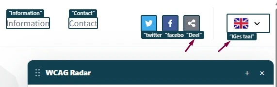

#3 - Hover-content niet sluitbaar
Wanneer met de muis over de links “Measurements” en “Data” in het hoofdmenu wordt bewogen, verschijnt extra content die over de bestaande paginacontent valt.
Oplossing:
Zorg ervoor dat deze extra content kan worden gesloten zonder gebruik van de muis en zonder dat de toetsenbordfocus hoeft te worden verplaatst. Ondersteun bijvoorbeeld het sluiten met de Escape-toets.
#4 - ‘aria-expanded’ ontbreekt bij submenu
In de header van de website hebben de links “Measurements” en “Data” submenu’s. Wanneer een gebruiker van een schermlezer het menu opent, wordt niet doorgegeven of het submenu open of gesloten is.
Wanneer een submenu aanwezig is, moet het element dat het submenu opent aangeven of het submenu zichtbaar of verborgen is.
Oplossing:
Gebruik het aria-expanded-attribuut op de knop of link die het submenu opent. Op dit moment staat dit attribuut op het <div>-element waar de link in staat.
#80 - Status van het taalmenu ontbreekt in de code
Nieuwe bevinding die is ontstaan na het oplossen van een bevinding uit de vorige audit.
Bovenaan de pagina staat een knop met een vlag en een pijl. Deze knop opent een extra venster, maar in de code staat niet of dit venster open of gesloten is. Gebruikers van een schermlezer horen daardoor niet of het venster is geopend.
Oplossing:
Zet aria-expanded="true" op de knop als het venster open is en aria-expanded="false" als het gesloten is.
aria-expanded werkt alleen goed als de toetsenbordfocus op de knop blijft. Kan de focus de knop verlaten terwijl het venster open is, gebruik dan visueel verborgen tekst die de toestand van het venster beschrijft. Werk deze tekst bij zodra het venster opent of sluit.
#81 - Namen van knoppen worden in de verkeerde taal voorgelezen

Nieuwe bevinding die is ontstaan na het oplossen van een bevinding uit de vorige audit.
In de Engelse versie van de website hebben een paar knoppen een aria-label met Nederlandse tekst. Een schermlezer spreekt deze labels uit met de uitspraakregels van de hoofdtaal van de pagina, en die is Engels. Daardoor zijn de labels moeilijk te verstaan.
Het gaat om:
- de knop “Deel” (naast de Facebook-knop);
- de knop om de taal te wijzigen, met de toegankelijke naam “Kies taal”.
Oplossing:
Vertaal het ARIA-label in de gekozen taal. Een nog betere oplossing is om een <span>-element met de tekst toe te voegen en dat te vertalen. ARIA-labels worden niet altijd goed vertaald.